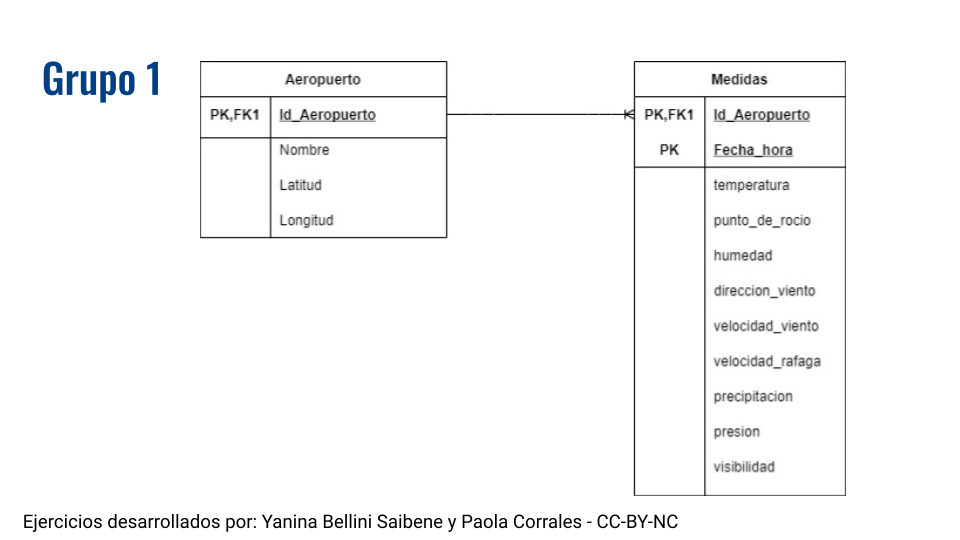
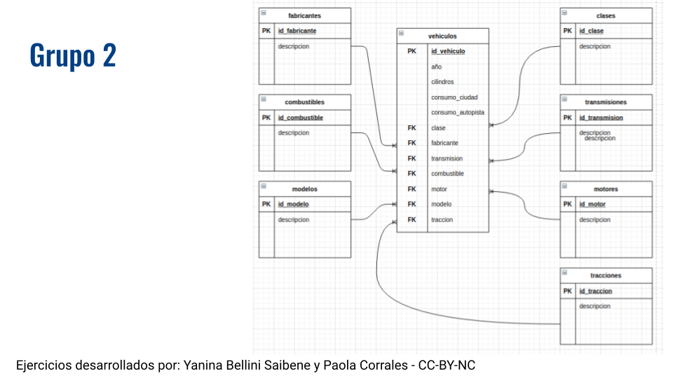
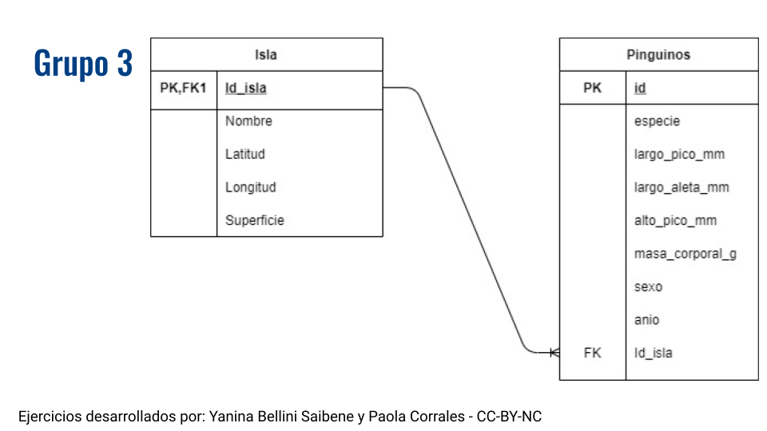
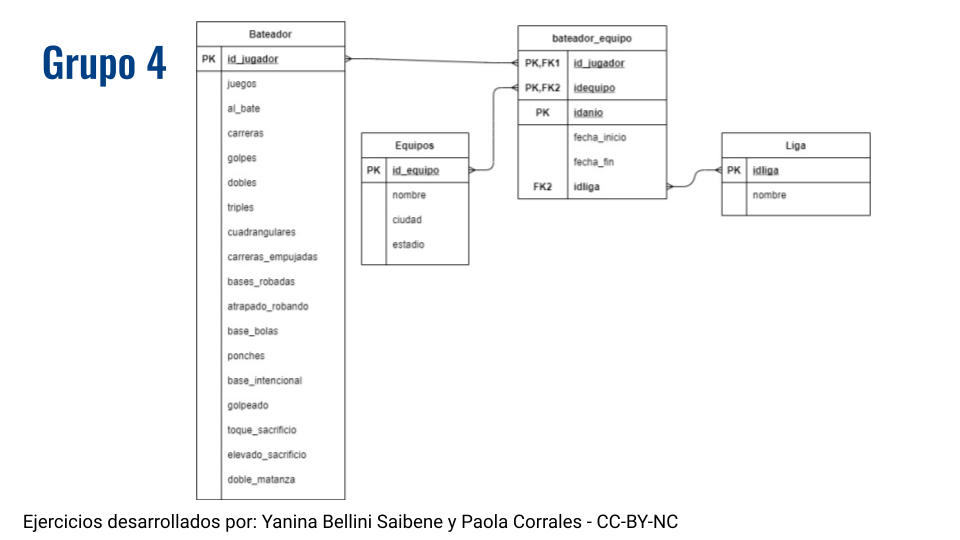
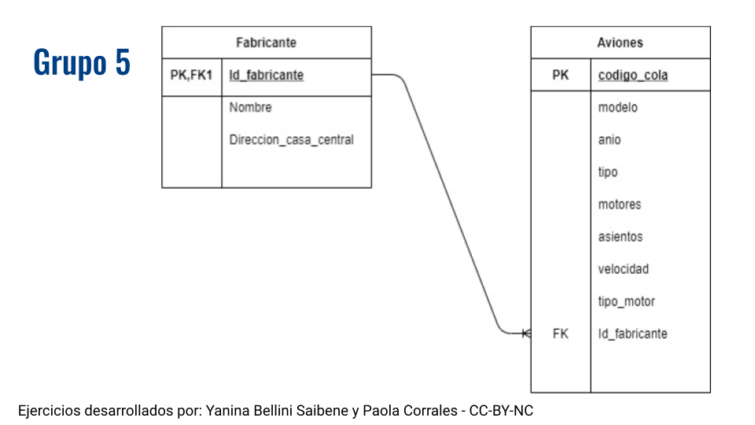
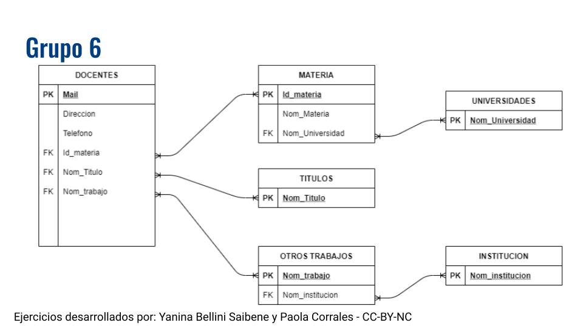

Clase 4 - Diseño de Bases de Datos Relacionales
Objetivos de Aprendizaje
Definir e identificar diferentes integridades en una base de datos relacional.
Identificar que son datos estructurados y datos no estructurados.
Definir tres características de los datos estructurados.
Reconocer cinco síntomas comunes de datos desordenados.
Definir las tres primeras formas normales.
Aplicar las tres primeras formas normales para modelar datos.
Slides
Ejercicios
Ejercicio 1
en la slide de su grupo completen con la definición correspondiente
Creen una entrada en el glosario (solapa Presentación del campus)
Grupo 1
Definir qué son las reglas de Integridad
Listar las reglas de integridad del video.
Grupo 2
Definir Integridad de Dominio
Dar un ejemplo
Grupo 3
Definir Integridad de Columna
Dar un ejemplo
Grupo 4
Definir Integridad definida por el usuario
Dar un ejemplo
Grupo 5
Definir Integridad Referencial
Dar un ejemplo
Grupo 6
- Definir Integridad de la Entidad
Grupo 7
- Explicar un ejemplo de Integridad de una entidad.
Esta es una plantilla del documento compartido utilizando google slides. Es el mismo archivo para toda la clase.
Ejercicio 2
Grupo 1
Seleccionar una relación para aplicar integridad referencial. Explicar que pasa en cada tabla si se eliminan, agregan o modifican registros.

Grupo 2
Seleccionar una relación para aplicar integridad referencial. Explicar que pasa en cada tabla si se eliminan, agregan o modifican registros.

Grupo 3
Seleccionar una relación para aplicar integridad referencial. Explicar que pasa en cada tabla si se eliminan, agregan o modifican registros.

Grupo 4
Seleccionar una relación para aplicar integridad referencial. Explicar que pasa en cada tabla si se eliminan, agregan o modifican registros.

Grupo 5
Seleccionar una relación para aplicar integridad referencial. Explicar que pasa en cada tabla si se eliminan, agregan o modifican registros.

Grupo 6
Seleccionar una relación para aplicar integridad referencial. Explicar que pasa en cada tabla si se eliminan, agregan o modifican registros.

Esta es una plantilla del documento compartido utilizando google slides. Es el mismo archivo para toda la clase. Es una buena idea utilizar los diagramas que los estudiantes generaron en la clase anterior. De ser así, se deben repetir los grupos.
Ejercicio 3
Normalizar los Datos de alojamientos en Buenos Aires listados en AirBnB teniendo en cuenta las formas normales (pueden ver una muestra de los datos en el campus en la solapa de la clase 4). Si llegan a tablas intermedias indicar que forma normal tienen.
Tabla descriptiva de los datos AirBnB en Buenos Aires
| Variable | Clase | Descripción |
| id | numérica | identificador del alojamiento |
| descripcion | caracter | nombre descriptivo (en inglés) del alojamiento |
| id_anfitrion | numérica | identificador del/la anfitrión/a |
| nombre_anfitrion | caracter | nombre del/la anfitrión/a |
| anfitrion_desde | fecha | fecha de la inscripción como anfitrión/a |
| superanfitrion | lógica | si tiene o no la categoría de “Súper Anfitrión” |
| barrio | caracter | nombre del barrio en que se ubica la propiedad |
| latitud | numérica | latitud de la ubicación de la propiedad |
| longitud | numérica | longitud de la ubicación de la propiedad |
| tipo_alojamiento | caracter | Si corresponde a un alojamiento_entero, habitacion_privada o habitacion_compartida. Puede estar listado con más de un tipo de alojamiento separado por punto y coma. |
| precio | numérica | precio por noche en moneda local |
| huéspedes | numérica | cantidad de huéspedes que puede recibir la propiedad |
| política de cancelación | caracter | tipo de política de cancelación (flexible, moderada, estricta, estricta_con_gracia (período de gracia de 14 días), superestricta_30 (50% de reembolso hasta 30 días antes de la llegada) y superestricta_60 (50% de reembolso hasta 60 días antes de la llegada). |
Pueden agregar más slides si necesitan.
Quienes trabajan asincrónicamente deben agregar su nombre en las slides que usen.
Esta es una plantilla del documento compartido utilizando google slides. Es el mismo archivo para toda la clase.
Lecturas sugeridas
Modulo 4 del libro Bases de datos. Rafael Camps Paré, Luis Alberto Casillas Santillán, Dolors Costal Costa, Marc Gibert Ginestà, Carme Martín Escofet, Oscar Pérez Mora. ISBN: 84-9788-269-5.
Tidy Data. Hadley Wickham (en inglés)